Recitation 1
Basic definitions · Data types · Scales of measurement · Displaying categorical data
How to use this page
Each question below is interactive. Click an option or type an answer, then press Check (or Enter). The page tells you right away whether the answer is correct. Show answer reveals the solution and the explanation, and Reset clears the question so you can try it again.
Progress
Part A — Statistics: the basic vocabulary
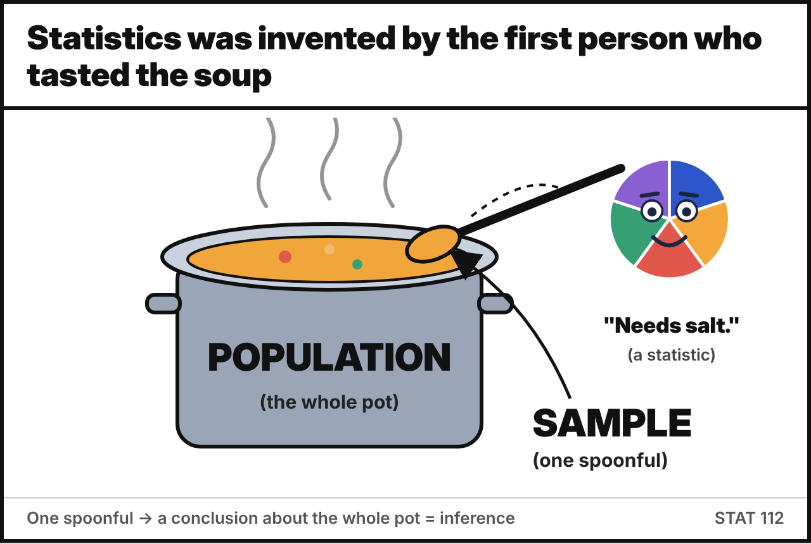
Match each term on the left with its definition on the right.
- Population :: The entire group of individuals or items under study
- Sample :: A subset of the population selected for study
- Variable :: A characteristic or attribute that can vary among individuals or items
- Parameter :: A numerical summary of the entire population
- Statistic :: A numerical summary of a sample
- Data :: Raw facts and figures collected from observations or experiments
- Statistics :: The field of study concerned with collecting, analyzing, presenting and interpreting data
- Experimental unit :: A single subject or object on which the variables are measured
Population ↔︎ Parameter and Sample ↔︎ Statistic: the first letters match, which makes the pairs easy to remember. Note the two meanings of statistics: the field (Statistics) and the plural of statistic (numbers computed from a sample).
Decide whether each scenario describes a population or a sample.
- Counting the total number of visitors to Yellowstone National Park in a year :: Population
- Surveying a random group of 500 students at a university about their study habits :: Sample
- Collecting data on the types of smartphones owned by all residents of a specific city :: Population
- Analyzing online customer reviews of a popular restaurant to understand customer satisfaction :: Sample
- Calculating the average annual income of all individuals in a country based on tax records :: Population
- Testing the battery life of 40 phones taken from a factory’s daily production of 10,000 phones :: Sample
- Recording the final grade of every student enrolled in STAT 112 this semester, to describe this semester’s class :: Population
Ask yourself: does the data cover every member of the group we want to describe?
- The restaurant reviews are a sample: only some customers write reviews, and they tend to be the very happy or the very unhappy ones (a self-selected sample).
- The STAT 112 grades are a population only because the group of interest is this semester’s class. If we wanted to describe all STAT 112 students over the years, the same data would be a sample.
A politician is running for mayor in a city with 25,000 registered voters. She surveys 200 registered voters, and 48% of them say they plan to vote for her.
The value 48% is a …
- parameter
- statistic
- population
- variable
48% describes the 200 surveyed voters (the sample), so it is a statistic.
- Population: the political choices of all 25,000 registered voters
- Sample: the political choices of the 200 voters interviewed
- Variable: the candidate each voter plans to vote for
In the same city, if the politician had been able to ask all 25,000 registered voters and 48% of them supported her, then 48% would be a parameter.
True. A summary computed from the whole population is a parameter. Whether a number is a parameter or a statistic depends on who it describes, not on the number itself.
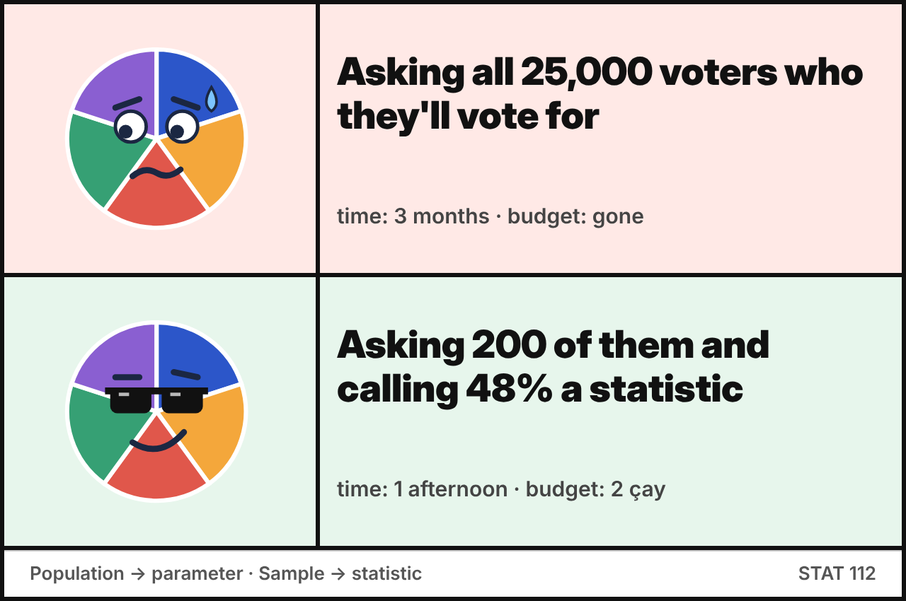
Fill in the blanks with the correct term.
The collection of all items of interest in a study is called the , and a descriptive measure of it is called a . A set of data drawn from it is a , and a descriptive measure of that set is called a . A characteristic of interest that can take different values for different elements is a , and the actual recorded values are the .
These are the five basic definitions from the lecture notes (Basic Definitions slide), plus data, which are the actual values of the variables.
A survey of METU students records 6 variables (age, department, GPA, weekly study hours, gender, smoking status) for each of 250 students.
How many individual data values does the dataset contain?
Each student is a row (observation) and each variable is a column, so the dataset has 250 × 6 = 1,500 data values. This is the same reasoning as the lecture example: 100 individuals × 4 variables = 400 items.
Researchers want to determine the average test score of high school students in a particular city. They randomly select five high schools in the city and collect the test scores of 50 students from each school.
Match each part of the study with the correct term.
- All high school students in the city :: Population
- The 250 selected students (50 from each of the 5 schools) :: Sample
- Test score :: Variable
- The test scores obtained from the 250 students :: Data
- The average test score of all high school students in the city :: Parameter
- The average test score of the 250 selected students :: Statistic
- An individual high school student :: Experimental unit
The sample size is 5 × 50 = 250 students. The parameter is unknown, so the researchers use the statistic (the sample average) to estimate it.
A research project investigates the average monthly spending on entertainment among households in a suburban neighborhood. The researchers randomly select 150 households and record their monthly entertainment expenditures in US dollars.
Write down the (a) data, (b) a statistic, (c) the population, (d) the variable, (e) the sample, (f) the experimental unit, and (g) a parameter.
- Data: the monthly entertainment expenditures (in USD) of the 150 selected households
- Statistic: the average monthly entertainment spending of the 150 selected households
- Population: all households in the suburban neighborhood
- Variable: monthly entertainment expenditure (in USD)
- Sample: the 150 randomly selected households
- Experimental unit: an individual household
- Parameter: the average monthly entertainment spending of all households in the neighborhood
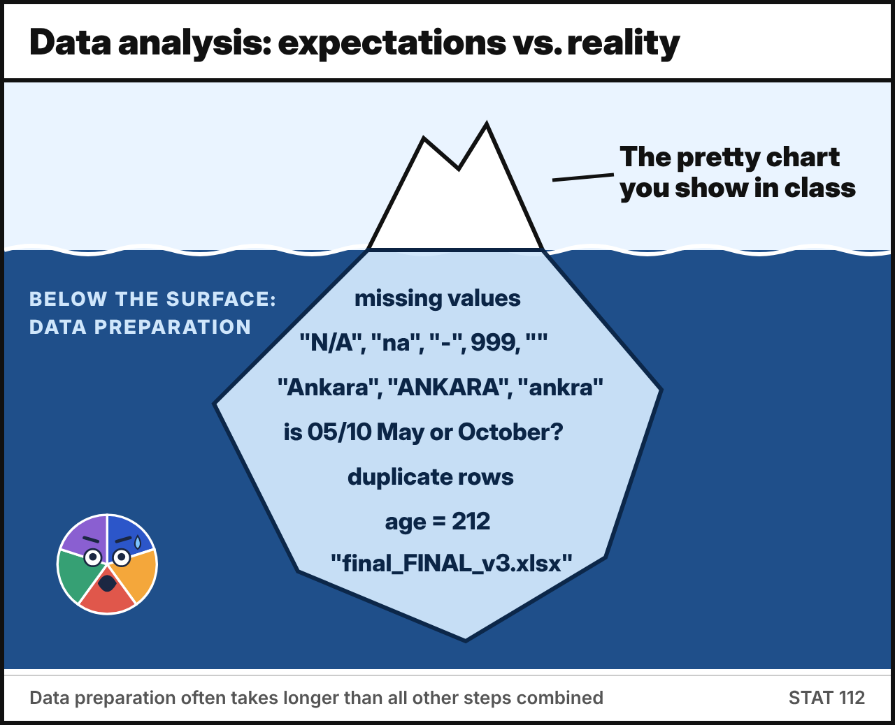
Put the steps of statistical practice in the correct order.
- Model building: set clear goals and write the research question
- Data collection: plan what data to collect and how to collect them
- Data preparation: identify dirty data, clean them, handle outliers and missing values
- Exploratory data analysis (EDA): get familiar with the data, mostly using visualizations
- Data analysis: apply appropriate statistical methods to extract information
- Data interpretation: interpret the results and draw conclusions
The research question comes first, because it decides which data are worth collecting. Data preparation often takes more time than all the other steps combined, which is why a large part of STAT 112 is about cleaning and tidying data.
Is each statement an example of descriptive or inferential statistics?
- The average GPA of the 40 students in our recitation section is 2.85. :: Descriptive
- Based on a survey of 200 voters, we estimate that the candidate will receive between 45% and 51% of all votes in the city. :: Inferential
- A bar chart shows the number of students enrolled in each department of the faculty. :: Descriptive
- A clinical trial with 300 patients concludes that the new drug lowers blood pressure in adults with hypertension. :: Inferential
- 60% of the people who answered our survey said they use Instagram every day. :: Descriptive
Descriptive statistics summarize and present the data we have, using tables, graphs and numerical measures. Inferential statistics use a sample to draw conclusions or make decisions about a larger population. Look for words like estimate, conclude, or a claim about a group bigger than the one that was measured.
Part B — Data types and scales of measurement
The U.S. Army Corps of Engineers studied fish in the Tennessee River (Alabama) and three tributary creeks to measure the effects of DDT pollution. For each of the 144 fish captured, the following variables were recorded. Classify each variable.
- River/creek where the fish was captured :: Qualitative
- Species (channel catfish, largemouth bass, or smallmouth buffalo fish) :: Qualitative
- Length (centimeters) :: Quantitative
- Weight (grams) :: Quantitative
- DDT concentration (parts per million) :: Quantitative
Length, weight and DDT concentration are measured on a numerical scale (cm, g, ppm), so they are quantitative. River/creek and species can only be sorted into categories, so they are qualitative (categorical).
Decide whether each variable is discrete or continuous.
- Number of students present in class today :: Discrete
- A patient’s body temperature measured with a thermometer :: Continuous
- Time it takes a student to solve a math problem :: Continuous
- Number of accidents per month (can range from 0 to 50) :: Discrete
- Number of website visitors per second :: Discrete
- Amount of rainfall in a day (mm) :: Continuous
- A runner’s speed during a race :: Continuous
Count it → discrete. Measure it → continuous. Counts (students, accidents, visitors) can only be whole numbers. Temperature, time, rainfall and speed can take any value in an interval; the number of decimals we record is limited only by the measuring instrument.
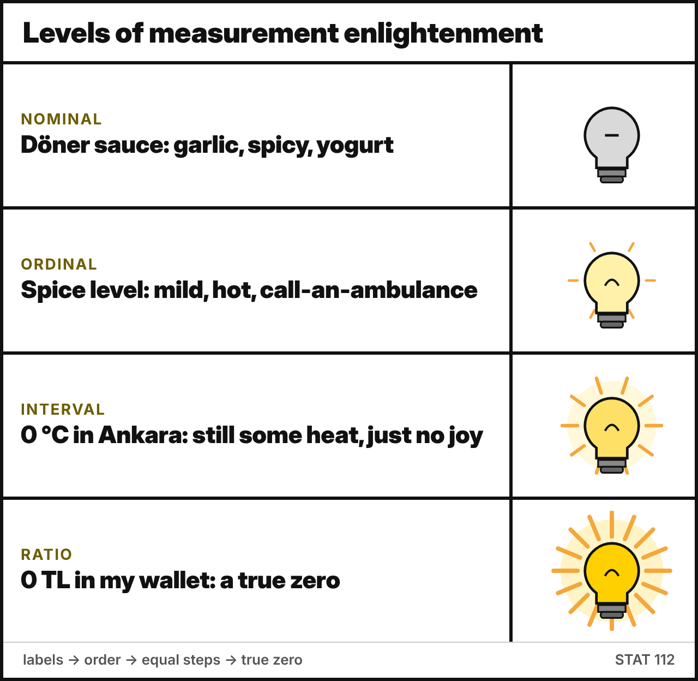
Match each scale of measurement with its description.
- Nominal :: Categories with no order or ranking, only labels. You can count frequencies and find the mode.
- Ordinal :: Categories with a meaningful order, but the differences between ranks are not equal or measurable. You can rank and find the median.
- Interval :: Numeric with meaningful, equal differences but no true zero. You can add and subtract, but “twice as much” is meaningless.
- Ratio :: Numeric with equal intervals and a true zero (zero = none). All of +, −, ×, ÷ are meaningful.
Each scale keeps the properties of the previous one and adds one more: Nominal (labels) → Ordinal (+ order) → Interval (+ equal distances) → Ratio (+ a true zero).
For each scenario, choose the scale of measurement and the type of data.
- A weather station records daily temperatures in degrees Celsius :: Interval ; Quantitative
- IQ test scores :: Interval ; Quantitative
- A clinic classifies blood pressure as “Normal”, “Pre-hypertensive” or “Hypertensive” :: Ordinal ; Qualitative
- A teacher records students’ scores out of 100 on a math exam :: Interval | Ratio ; Quantitative
- Respondents identify their gender as “Male”, “Female” or “Nonbinary” :: Nominal ; Qualitative
- A car’s odometer records the distance traveled (km) during a road trip :: Ratio ; Quantitative
- Moviegoers rate a film from 1 (terrible) to 5 (excellent) :: Ordinal ; Qualitative
- Students’ letter grades (AA, BA, BB, …) on their transcripts :: Ordinal ; Qualitative
- Number of votes each candidate received in a local election :: Ratio ; Quantitative
- Individuals’ monthly income in Turkish lira :: Ratio ; Quantitative
- Temperature (°C) and IQ are interval: 0 °C is the freezing point of water, not “no heat”, and an IQ of 0 does not mean “no intelligence”. So 40 °C is not twice as hot as 20 °C.
- Blood pressure categories are ordinal, not nominal: Normal < Pre-hypertensive < Hypertensive has a clear order.
- The film rating (1–5) is ordinal: the numbers are labels for ordered categories. The step from 1 to 2 is not necessarily the same “amount” as the step from 4 to 5.
- Exam scores out of 100 are debatable, so both answers are accepted. The lecture lists SAT-type exam grading as interval, because 0 points does not mean “zero knowledge”. If you think of the score as “number of points earned”, 0 really means none, and the variable is ratio.
- Distance, vote counts and income have a true zero, so they are ratio.
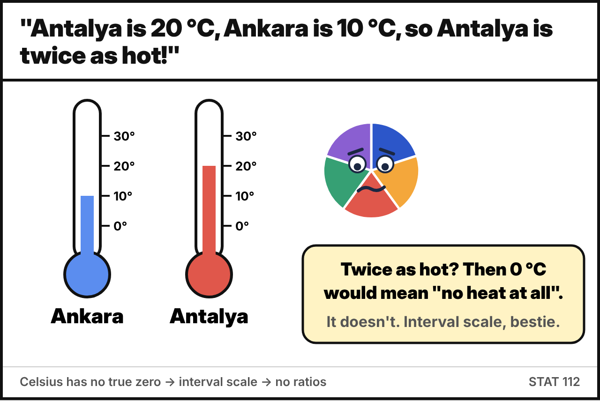
A dataset contains the following variables. Is each one measured on an interval or a ratio scale?
- Body height (cm) :: Ratio
- Temperature (°C) :: Interval
- Age (years) :: Ratio
- Calendar year of birth :: Interval
- Time of day on a 24-hour clock :: Interval
- Weight (kg) :: Ratio
- Monthly income (USD) :: Ratio
The test: does 0 mean “none of it”?
- Year 0 does not mean “the beginning of time”, and 00:00 is not “no time”, so calendar year and time of day are interval. (The year 2000 is not “twice” the year 1000.)
- 0 cm, 0 kg, 0 years and 0 USD all mean “none”, so ratios make sense: 40 kg is twice as heavy as 20 kg.
A dental study records the following variables. Classify each one.
- Number of teeth :: Metric discrete
- Age :: Metric continuous
- Age at last birthday (in years) :: Metric discrete
- Has the patient visited their dentist in the last year? :: Nominal
- Social class :: Ordinal
- Colour of filling material :: Nominal
- Calcium : phosphorus ratio in teeth :: Metric continuous
- Severity of gum disease (none, mild, moderate, severe) :: Ordinal
- Age vs. age at last birthday: age itself is continuous (time is measured), but “age at last birthday” only takes whole numbers, so it is discrete.
- A yes/no variable is nominal (it is also called binary).
- Social class and severity have a natural order, so they are ordinal.
Which summary is meaningful for ordinal data but not for nominal data?
- Mode
- Median
- Mean
- The ratio of two values
The median needs the values to be ranked, which is possible for ordinal data (e.g. Disagree < Neutral < Agree) but not for nominal data (e.g. eye colour). The mode works for both. The mean and ratios need numeric data with equal distances.
Temperature in Celsius is an interval variable. On which scale of measurement is temperature in Kelvin?
Ratio. 0 K (absolute zero) means a complete absence of thermal energy, so it is a true zero, and 200 K really is twice as much as 100 K. The quantity is the same (temperature), but the scale depends on how it is measured.
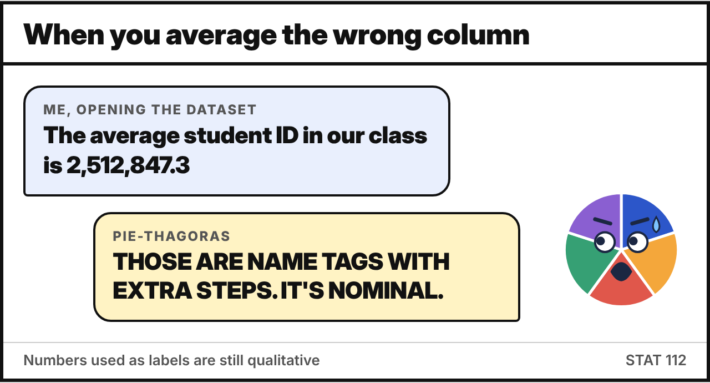
Decide whether each statement is true or false.
- If we code gender as 0 = male and 1 = female, gender becomes a quantitative variable. :: False
- Every continuous variable is quantitative. :: True
- On an interval scale, 40 °C is twice as hot as 20 °C. :: False
- Ordinal data tell us the order of the categories but not the size of the differences between them. :: True
- Nominal data must be discrete. :: True
- Student ID numbers are ratio-scaled because they are numbers. :: False
- Numbers used as labels (0/1 codes, ID numbers, phone numbers, zip codes) have no numerical meaning. They are still nominal: averaging student IDs gives nonsense.
- Continuous variables are measured on a numeric scale, so they are always quantitative.
- Nominal categories are separate labels, so you cannot have “half a category”. Nominal data are always discrete.
Which of the following variables are measured on a ratio scale? Select all that apply.
- Weight of a newborn baby (kg)
- Temperature in Fahrenheit
- Number of fish in Lake Eymir
- Year of birth
- Time to finish a 100 m race (seconds)
- IQ score
Weight, number of fish, and race time all have a true zero (0 kg, 0 fish, 0 seconds mean “none”), so they are ratio. Fahrenheit, year of birth and IQ have an arbitrary zero, so they are interval.
A quantitative variable Age is recoded into groups: 1 = “0–17”, 2 = “18–34”, 3 = “35–54”, 4 = “55+”.
What type of variable is the new, recoded variable?
- Nominal
- Ordinal
- Interval
- Ratio
After recoding, the values 1–4 are ordered categories. The groups also have unequal widths (18, 17, 20 years and open-ended), so the distance between codes has no meaning. The new variable is ordinal. Recoding a quantitative variable into categories always loses information: we no longer know the exact age.
Part C — Displaying categorical data
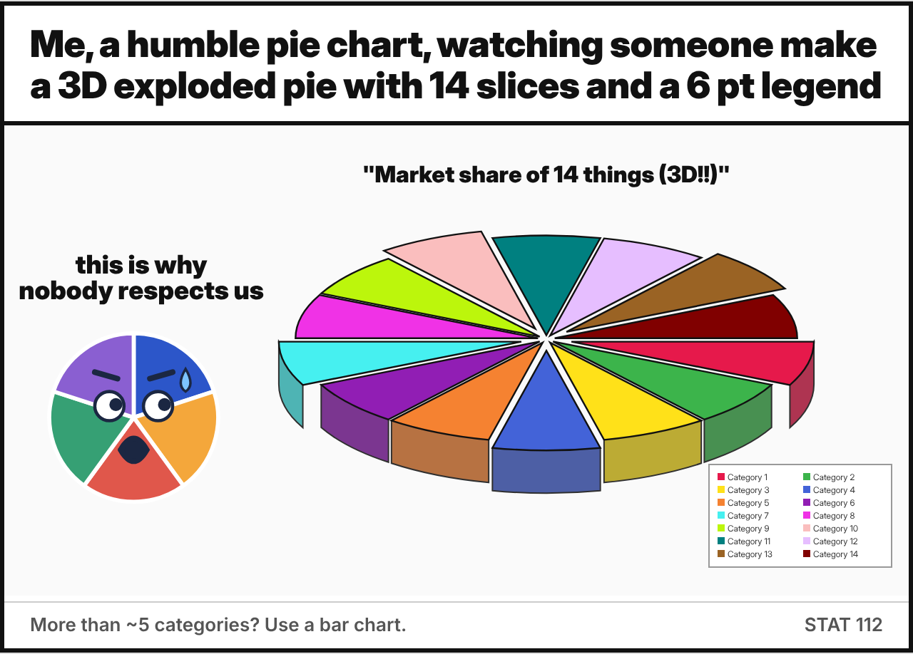
Choose the name of each display.
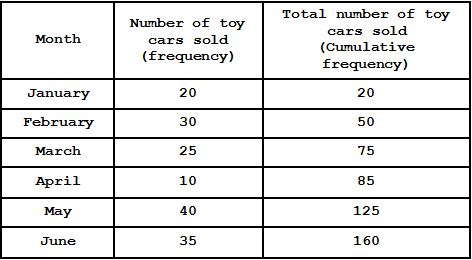
:: Frequency table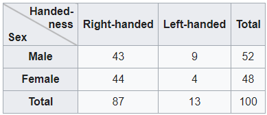
:: Contingency table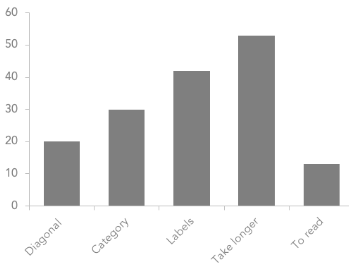
:: Bar chart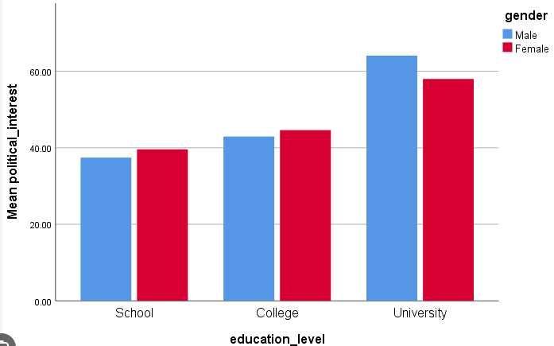
:: Clustered bar chart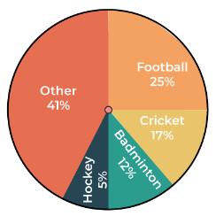
:: Pie chart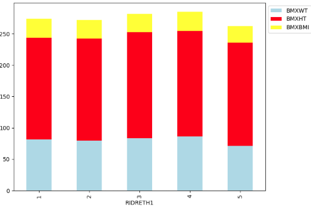
:: Stacked bar chart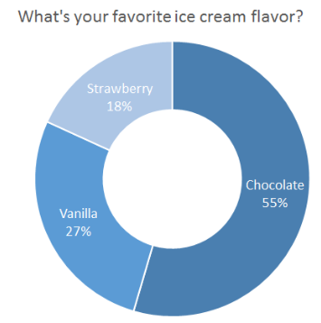
:: Doughnut chart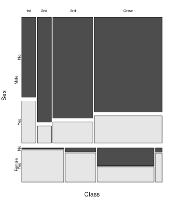
:: Mosaic plot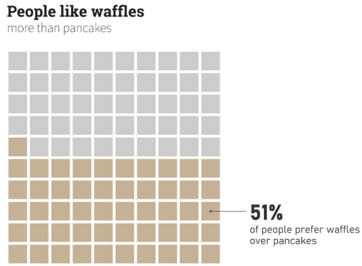
:: Waffle chart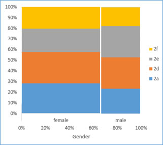
:: Spine plot | Stacked bar chart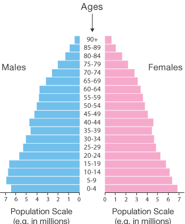
:: Population pyramid
- Clustered bars put the groups side by side. Stacked bars put them on top of each other.
- A spine plot is a 100% stacked bar chart in which the width of each bar is proportional to the group size. A mosaic plot extends this idea to more than two variables.
- A waffle chart shows a percentage as filled squares in a 10 × 10 grid (each square = 1%).
Is each display used for one categorical variable, or to show the relationship between two or more categorical variables?
- Frequency table :: One variable
- Pie chart :: One variable
- Contingency (two-way) table :: Two or more
- Waffle chart :: One variable
- Clustered bar chart :: Two or more
- Doughnut chart :: One variable
- Mosaic plot :: Two or more
- Bar chart :: One variable
- Spine plot :: Two or more
To compare two categorical variables you need a display that crosses them: a contingency table, or clustered, stacked, spine or mosaic plots. The population pyramid from the previous question also shows two variables (age group and sex) as back-to-back bars.
The student performance dataset
The Center of Assessment and Evaluation wants to study the factors that affect student performance. Information on 110 students from a high school in Seoul was collected. The first six rows of the data:
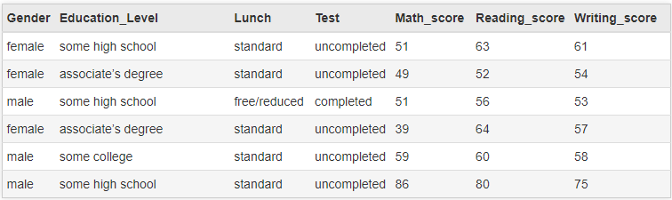
Lunch: free/reduced or standard lunch. Test: “completed” if the student completed a test preparation course, otherwise “uncompleted”. Education_Level is the parents’ education level.
Classify each variable in the dataset.
- Gender :: Nominal
- Education_Level (parents’ education) :: Ordinal
- Lunch :: Nominal
- Test (preparation course) :: Nominal
- Math_score :: Quantitative
Education level has a natural order: some high school < high school < some college < associate’s < bachelor’s < master’s. That makes it ordinal, so a bar chart of it should keep that order rather than sorting the bars alphabetically. Gender, Lunch and Test are labels with no order (Lunch and Test are binary).
Use the frequency table of parents’ education level.
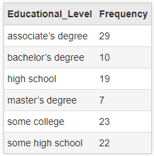
The total number of students is n = . The most common (modal) education level is . The relative frequency of “master’s degree” is 7/110 = (4 decimals), which is about %.
n = 29 + 10 + 19 + 7 + 23 + 22 = 110. The largest frequency is 29, for associate’s degree. The relative frequency of master’s degree is 7/110 ≈ 0.0636, or 6.36%.
Interpretation: the parents of 29 students (26.4%) have an associate’s degree, and the parents of 7 students (6.4%) have a master’s degree.
Here is the relative frequency table and the bar chart of the same variable.
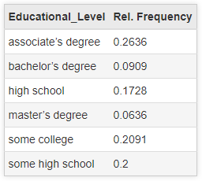
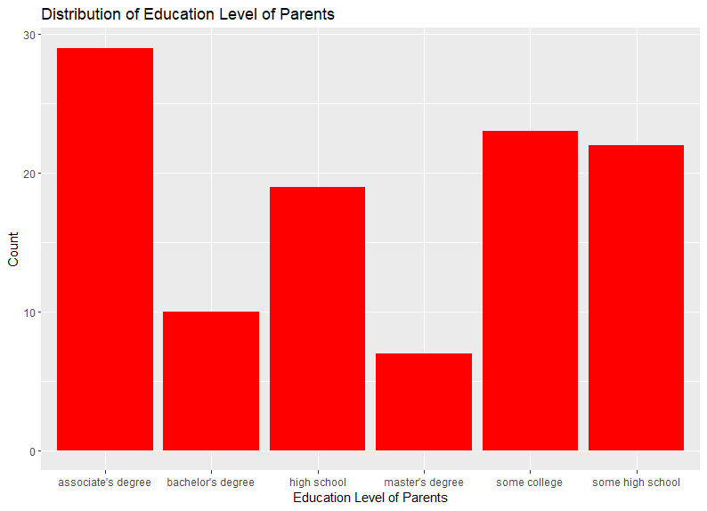
If we re-draw the bar chart using relative frequencies instead of counts, how does it change?
- The tallest bar becomes a different category.
- The bars get closer together, because the proportions are all smaller than 1.
- Only the y-axis scale changes. The bars keep exactly the same shape.
- It must be redrawn as a pie chart, because proportions add up to 1.
Every relative frequency is the count divided by the same number (n = 110), so every bar is scaled by the same factor. Only the y-axis labels change, from 0–30 to 0–0.27. Also notice that this chart orders the bars alphabetically. Because education level is ordinal, a better chart would order the bars from some high school to master’s degree.
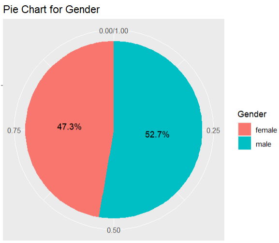
Using the charts and n = 110, answer: about students completed the test preparation course, and about students are male.
- Completed: 0.345 × 110 = 37.95 ≈ 38 students (so 72 did not complete it)
- Male: 0.527 × 110 = 57.97 ≈ 58 students (and 52 female)
Charts that show only percentages hide the sample size, so always report n alongside the percentages.
Write a short interpretation (2–3 sentences) of the doughnut chart and the pie chart above.
The doughnut chart shows that 65.5% of the students did not complete the test preparation course, while 34.5% completed it. So roughly two out of three students did not take the course. The pie chart shows that 52.7% of the students in the study are male and 47.3% are female, so the sample is fairly balanced by gender.
Watch out: read the labels carefully. The larger (orange) slice is uncompleted, not completed.
The contingency table shows handedness by sex for 100 people.
The total number of left-handed people is . The percentage of males who are left-handed is % (1 decimal). The percentage of left-handed people who are female is % (1 decimal).
- Left-handed total: 9 + 4 = 13
- Among males: 9 / 52 = 0.173 → 17.3% (we divide by the row total, 52)
- Among left-handers: 4 / 13 = 0.308 → 30.8% (we divide by the column total, 13)
The two percentages answer different questions, so always ask “percent of what?” For comparison, only 4/48 = 8.3% of females are left-handed, which suggests that left-handedness is more common among males in this group.
Using the same table, we want to compare the proportion of left-handed people among males and among females. Which display is the best choice?
- A pie chart of handedness
- A clustered bar chart of the counts
- A 100% stacked bar chart (or spine plot) of handedness within each sex
- A frequency table of sex
To compare proportions within groups, every group should be scaled to 100%. That is exactly what a 100% stacked bar chart / spine plot does, and a spine plot also shows group size through the bar width. A pie chart and a frequency table each show only one variable. A clustered bar chart of counts can mislead when the groups have different sizes.